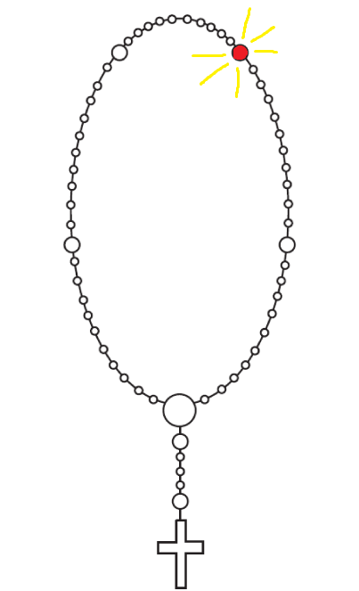

Radosna otajstva

Treća desetica
Oče naš, koji jesi na nebesima, sveti se ime tvoje. Dođi kraljevstvo tvoje. Budi volja
tvoja, kako na nebu tako i na zemlji. Kruh naš svagdanji daj nam danas, i otpusti nam duge naše, kako i mi
otpuštamo dužnicima našim, i ne uvedi nas u napast, nego izbavi nas od zla.
Amen.
Amen.